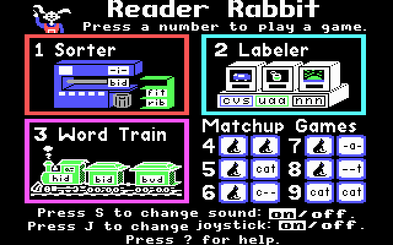

Hello. My name is Tyler. I have been using computers since before I could walk. Typing in "CD\A: in DOS to load "Reader Rabbit" off of the floppy drive on my dad's beast of a laptop.
My Grandfather started a company that made exercise machines. This was in the 80's so personal fitness equipment sales were at their height, as they had found success with a stairclimber. My grandfather employed a few in house programmers. I would often go to work with my dad and get set up with all the "Commander Keen" I could play.
I rememeber getting our first home PC. I rememeber my dad being excited about the Intel 486 processor, and how it smoked the 386. Looking it up now, 50MHz seems laughable. But I still feel like we were able to get so much done with so little!
So from that point on in the early 90's I always had a hand in helping upgrade computer parts. Until eventually my interest surpassed my dads and now I was the one begging for new parts and components. By High School I'd collected enough to make my own frankenstein PC.
Currently I have a gaming pc that I built from scratch. I also have a pc that I built inside of a milk crate. I have a drum machine that needs software to run, so I had to build something separate from the PC that I record on, which is another PC that I built.
I am in the process of completing a full stack web development program at UCI. I have also taken a circuit board building course at Saddleback College. Additionally, I took Python and Java courses at Orange Coast Community College.
Languages I am experienced with:Adobe Software I am experienced with